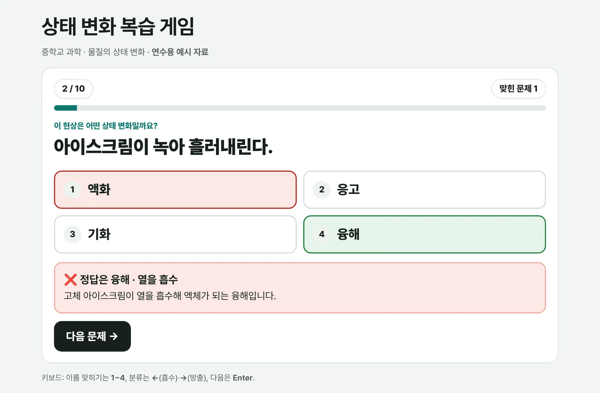
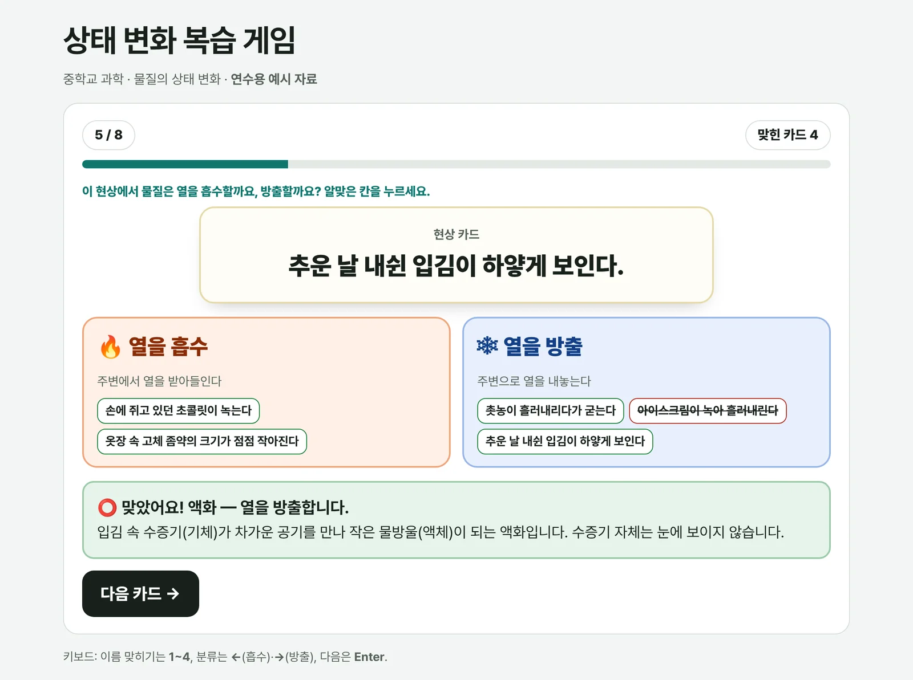

복습 게임
교사가 엑셀로 만든 문제 파일(CSV)을 읽어, 상태 변화 이름 맞히기와 «열 흡수·방출» 분류 활동이 있는 한 파일 게임을 Code 탭으로 만듭니다.
- 목표
- 교사가 만든 문제 파일 하나로 «이름 맞히기(4지선다)»와 «열 흡수·방출 분류» 두 활동을 하는 복습 게임을 만든다 (예시: 중학교 과학 — 물질의 상태 변화, P1 계획표의 3·7·8차시)
- 준비물
- P1에서 만든
물질의상태변화/03_복습게임폴더와 그 안의문제목록.csv(예시 파일 문제목록.csv, 16문제) - 결과물
index.html한 파일 — 문제가 들어 있어 더블클릭으로 열림, 교사가 새 CSV를 고르면 문제가 바뀜- 주의
- 문제·정답·해설은 교사가 쓰고 확인 · 클로드가 정답을 바꾸지 않게 하기
문제는 교사가 만든 파일로 주고 클로드는 게임만 만들게 하는 방법은 7차시와 같습니다. 이번에는 문제 파일에 «열» 칸(흡수/방출)을 하나 더 두어 한 파일로 두 활동(이름 맞히기, 열 흡수·방출 분류)을 만듭니다. 핵심은 둘입니다. 문제를 게임 안에 그대로 넣게 하는 것, 그리고 틀려 보이는 곳은 클로드가 알려만 주고 고치는 것은 교사가 하는 것입니다. 수업 중에 문제를 바꿀 수 있게 «선생님용» 파일 고르기 칸도 함께 둡니다.
먼저 볼 영상

1 준비
- P1에서 만든
물질의상태변화/03_복습게임폴더가 있는지 봅니다. - 문제 파일을 만듭니다. 엑셀 첫 줄에 열 이름을 쓰고, 둘째 줄부터 한 줄에 한 문제씩 씁니다. 시간이 없으면 예시 파일 문제목록.csv 를 받아 폴더에 넣습니다.
번호 현상 정답 오답1 오답2 오답3 열 해설 4 차가운 컵 바깥에 물방울이 맺힌다. 액화 기화 응고 융해 방출 컵 주위 공기 속 수증기가 차가운 컵에 닿아 물방울이 되는 액화입니다. … 5 드라이아이스의 크기가 점점 작아진다. 승화(고체→기체) 기화 융해 승화(기체→고체) 흡수 고체 이산화 탄소가 액체를 거치지 않고 바로 기체가 되는 승화입니다. … 6 추운 겨울 아침 풀잎에 서리가 생긴다. 승화(기체→고체) 응고 액화 승화(고체→기체) 방출 공기 중 수증기가 액체를 거치지 않고 바로 얼음 알갱이가 되는 승화입니다. - 엑셀에서 저장할 때 파일 형식을 «CSV UTF-8»로 시작하는 항목으로 고르고 이름을
문제목록.csv로 합니다. 그냥 «CSV»로 저장하면 한글이 깨질 수 있습니다.캡처 넣을 곳 · P4-1
엑셀 저장 창 (준비 3번).- 빨간 상자: 파일 형식의 «CSV UTF-8» 항목
- 파일 이름 칸의 문제목록.csv
2 따라 하기
번호 순서대로 진행합니다. 프롬프트가 필요한 단계에는 바로 아래에 복사 단추가 있습니다.
- 데스크톱 앱 사이드바 맨 위의 Code 탭을 누릅니다.
- 프롬프트 상자 아래 줄에서 환경은 Local 묶음의 맨 위 항목, 폴더는 Open folder… 로
03_복습게임, 권한 모드는 Plan 을 고릅니다. - 계획을 받습니다.
중학교 과학 '물질의 상태 변화' 복습 게임을 만들려고 합니다. 먼저 계획만 세워 주세요. 문제는 이 폴더의 문제목록.csv 에 교사가 만들어 두었습니다. (열: 번호, 현상, 정답, 오답1, 오답2, 오답3, 열, 해설 — «열» 칸은 흡수 또는 방출) 요구 사항 - index.html 한 파일. 외부 라이브러리·글꼴·인터넷 없이 열려야 함 - 문제목록.csv 의 내용을 index.html 안에 그대로 넣기 (파일을 더블클릭해 열어도 되게, 실행할 때 CSV를 따로 불러오지 않기) - 교사가 새 CSV 를 고르면 문제가 바뀌는 «선생님용» 칸도 두기 (저장하지 않음, 형식이 틀리면 어느 줄이 틀렸는지 알려 주기) - 활동 1 «이름 맞히기»: 현상을 보고 상태 변화 이름 4지선다, 10문제 무작위, 보기 순서도 섞기 - 활동 2 «열 흡수·방출 분류»: 현상 카드를 «열을 흡수»·«열을 방출» 칸에 넣기, 8장 - 답하면 바로 정답과 해설, 끝나면 점수와 틀린 문제 다시 보기 - 큰 단추, 휴대폰에서도 한 손으로, 키보드로도 (1~4, ←/→) - 문제·정답·해설은 CSV 그대로 쓰고 바꾸지 않기. CSV 에 틀린 곳이 보이면 고치지 말고 알려 주기 계획에는 화면 구성, CSV를 읽고 채점하는 방법, 다 만든 뒤 확인할 방법을 적어 주세요.
«index.html 안에 그대로 넣기»가 중요합니다. 더블클릭으로 연 웹페이지는 보안 때문에 옆에 있는 CSV 파일을 읽지 못하는 경우가 많습니다. 문제를 페이지 안에 넣어 두면 USB로 옮겨도, 인터넷에 올려도 그대로 열립니다. «바꾸지 않기, 알려 주기»는 정답을 고치는 사람이 교사라는 약속입니다.
캡처 넣을 곳 · P4-2
Plan 모드의 계획 (따라 하기 3번).- 계획 전체가 보이게
- 빨간 상자: CSV를 index.html 안에 넣는다는 부분
- 계획을 읽고 고칠 점은 말로 고칩니다. 예: «활동 1은 전체 문제를 다 내도록», «틀린 문제만 다시 풀기 단추도»
- 권한 모드를 Manual 로 바꾸고 만들기를 맡깁니다.
계획대로 만들어 주세요. 다 만들면 앱 안 브라우저 창에서 두 활동을 끝까지 해 보고, CSV의 모든 줄에서 정답 판정과 «열» 분류가 CSV와 같은지 확인한 결과를 알려 주세요.
- 대화창의
index.html경로를 눌러 앱 안 브라우저 창에서 두 활동을 직접 해 봅니다. 일부러 몇 문제를 틀려 정답과 해설이 나오는지도 봅니다.캡처 넣을 곳 · P4-3
앱 안 브라우저 창 (따라 하기 6번).- 틀린 보기(빨강)와 정답(초록), 아래 해설이 함께 보이게
- 클로드에게 문제 파일을 검토만 맡깁니다. 고치는 것은 교사가 합니다.
문제목록.csv 의 과학 내용을 검토만 해 주세요. 파일은 고치지 마세요. 1. 정답이 현상과 맞는지 (승화는 방향까지) 2. «열» 칸이 정답과 맞는지: 융해·기화·승화(고체→기체)는 흡수, 응고·액화·승화(기체→고체)는 방출 3. 오답 보기 가운데 정답이 될 수도 있는 것이 섞여 있는지 4. 해설이 오개념을 부르지 않는지 (예: «수증기가 하얗게 보인다») 문제가 있는 줄 번호와 까닭을 표로 알려 주세요.
검토 결과를 보고 고칠 줄이 있으면 엑셀에서 교사가 직접
문제목록.csv를 고쳐 저장합니다. 클로드에게 고치게 하면 편하지만, 무엇이 바뀌었는지 놓치기 쉽습니다. - 문제 파일을 고쳤다면 게임에 다시 넣습니다.
문제목록.csv 를 고쳤습니다. 게임 안에 넣어 둔 문제를 새 파일 내용으로 바꾸고, 바뀐 줄을 알려 주세요.
수업 중에 급히 문제를 바꿀 때는 게임 시작 화면의 «선생님용 · 문제 파일 바꾸기»에서 새 CSV를 고르면 됩니다. 그 창에서만 바뀌고 저장되지는 않습니다.
3 결과 예시


예시 게임 직접 해 보기 → · 예시 문제 파일(CSV) 내려받기 →
4 검증 포인트
② 승화의 방향 — 보기에 «승화»만 있지 않고 방향이 함께 있는지, 드라이아이스·좀약·언 빨래는 «고체→기체», 서리·성에는 «기체→고체»인지 봅니다.
③ 열 분류 — 융해·기화·승화(고체→기체)는 흡수, 응고·액화·승화(기체→고체)는 방출로 분류되는지 봅니다.
④ 오답 보기 — 정답이 될 수도 있는 보기가 섞여 있지 않은지 봅니다. 예를 들어 «젖은 빨래가 마른다»에 «기화»와 «증발»을 함께 보기로 두면 둘 다 맞습니다.
⑤ 해설 — «입김은 수증기가 보이는 것»처럼 오개념을 부르는 해설이 없는지 봅니다. 수증기는 눈에 보이지 않습니다.
⑥ 인터넷 없이 — 파일만 USB로 다른 PC에 옮겨 더블클릭해도 문제가 나오는지 봅니다.
⑦ 새 CSV — 일부러 «열» 칸을 비운 CSV를 골라, 어느 줄이 틀렸는지 알려 주는지 봅니다.
⑧ 학생 기기 — 휴대폰에서 단추가 손가락으로 누르기 쉬운지, 키보드(1~4, ←/→)로도 되는지 봅니다.
5 다른 단원에 적용하기
따라 하기 3단계 프롬프트 1 대신 아래 교과 단원 프롬프트를 씁니다. 문제 파일은 프롬프트의 «열:» 줄에 적힌 열 이름으로 교사가 먼저 만들고, 마지막 열 앞의 «분류» 칸에는 활동 2의 두 칸 이름 가운데 하나를 씁니다. 5단계와 7단계는 아래 공통 프롬프트로 바꿔 씁니다.
계획대로 만들어 주세요. 다 만들면 앱 안 브라우저 창에서 두 활동을 끝까지 해 보고, 계획의 «다 만든 뒤 확인할 것»을 하나씩 점검한 결과를 표로 알려 주세요.
문제목록.csv 의 내용을 검토만 해 주세요. 파일은 고치지 마세요. 1. 정답이 문제와 맞는지 2. «분류» 칸이 정답과 맞는지 3. 오답 보기 가운데 정답이 될 수도 있는 것이 섞여 있는지 4. 해설이 교과서 용어와 다르거나 오해를 부르는 곳이 있는지 문제가 있는 줄 번호와 까닭을 표로 알려 주세요.
국어비유와 상징문장에 쓰인 표현 방법 맞히기 + «직유 / 은유» 분류
중학교 국어 '비유와 상징' 복습 게임을 만들려고 합니다. 먼저 계획만 세워 주세요. 문제는 이 폴더의 문제목록.csv 에 교사가 만들어 두었습니다. (열: 번호, 문장, 정답, 오답1, 오답2, 오답3, 분류, 해설 — «분류» 칸은 «직유» 또는 «은유») 요구 사항 - index.html 한 파일. 외부 라이브러리·글꼴·인터넷 없이 열려야 함 - 문제목록.csv 의 내용을 index.html 안에 그대로 넣기 (파일을 더블클릭해 열어도 되게, 실행할 때 CSV를 따로 불러오지 않기) - 교사가 새 CSV 를 고르면 문제가 바뀌는 «선생님용» 칸도 두기 (형식이 틀리면 어느 줄이 틀렸는지 알려 주기) - 활동 1: 문장에 쓰인 표현 방법 맞히기 (직유·은유·의인·상징 중 4지선다), 10문제 무작위, 보기 순서도 섞기 - 활동 2: 카드를 «직유»·«은유» 칸에 나누기, 8장 - 답하면 바로 정답과 해설, 끝나면 점수와 틀린 문제 다시 보기 - 큰 단추, 휴대폰에서도 한 손으로, 키보드로도 - 문제·정답·해설은 CSV 그대로 쓰고 바꾸지 않기. CSV 에 틀린 곳이 보이면 고치지 말고 알려 주기 다 만든 뒤 확인할 것 - CSV의 모든 줄에서 정답 판정과 분류가 CSV와 같은지 - «분류» 칸이 직유 또는 은유인 줄만 활동 2에 쓰기 계획에는 화면 구성, CSV를 읽고 채점하는 방법, 위의 확인 방법을 적어 주세요.
수학일차함수와 그래프그래프 설명(지나는 두 점, 기울기 등)을 보고 알맞은 식 고르기 + «기울기가 양수 / 기울기가 음수» 분류
중학교 수학 '일차함수와 그래프' 복습 게임을 만들려고 합니다. 먼저 계획만 세워 주세요. 문제는 이 폴더의 문제목록.csv 에 교사가 만들어 두었습니다. (열: 번호, 문제, 정답, 오답1, 오답2, 오답3, 분류, 해설 — «분류» 칸은 «기울기가 양수» 또는 «기울기가 음수») 요구 사항 - index.html 한 파일. 외부 라이브러리·글꼴·인터넷 없이 열려야 함 - 문제목록.csv 의 내용을 index.html 안에 그대로 넣기 (파일을 더블클릭해 열어도 되게, 실행할 때 CSV를 따로 불러오지 않기) - 교사가 새 CSV 를 고르면 문제가 바뀌는 «선생님용» 칸도 두기 (형식이 틀리면 어느 줄이 틀렸는지 알려 주기) - 활동 1: 그래프 설명(지나는 두 점, 기울기 등)을 보고 알맞은 식 고르기, 10문제 무작위, 보기 순서도 섞기 - 활동 2: 카드를 «기울기가 양수»·«기울기가 음수» 칸에 나누기, 8장 - 답하면 바로 정답과 해설, 끝나면 점수와 틀린 문제 다시 보기 - 큰 단추, 휴대폰에서도 한 손으로, 키보드로도 - 문제·정답·해설은 CSV 그대로 쓰고 바꾸지 않기. CSV 에 틀린 곳이 보이면 고치지 말고 알려 주기 다 만든 뒤 확인할 것 - CSV의 모든 줄에서 정답 판정과 분류가 CSV와 같은지 - 정답 식이 문제의 두 점을 정말 지나는지 계산해 보기 계획에는 화면 구성, CSV를 읽고 채점하는 방법, 위의 확인 방법을 적어 주세요.
영어과거 시제로 경험 말하기빈칸에 알맞은 과거형 고르기 + «규칙 동사 / 불규칙 동사» 분류
중학교 영어 '과거 시제로 경험 말하기' 복습 게임을 만들려고 합니다. 먼저 계획만 세워 주세요. 문제는 이 폴더의 문제목록.csv 에 교사가 만들어 두었습니다. (열: 번호, 문장(빈칸), 정답, 오답1, 오답2, 오답3, 분류, 해설 — «분류» 칸은 «규칙 동사» 또는 «불규칙 동사») 요구 사항 - index.html 한 파일. 외부 라이브러리·글꼴·인터넷 없이 열려야 함 - 문제목록.csv 의 내용을 index.html 안에 그대로 넣기 (파일을 더블클릭해 열어도 되게, 실행할 때 CSV를 따로 불러오지 않기) - 교사가 새 CSV 를 고르면 문제가 바뀌는 «선생님용» 칸도 두기 (형식이 틀리면 어느 줄이 틀렸는지 알려 주기) - 활동 1: 빈칸에 알맞은 과거형 고르기 (4지선다), 10문제 무작위, 보기 순서도 섞기 - 활동 2: 카드를 «규칙 동사»·«불규칙 동사» 칸에 나누기, 8장 - 답하면 바로 정답과 해설, 끝나면 점수와 틀린 문제 다시 보기 - 큰 단추, 휴대폰에서도 한 손으로, 키보드로도 - 문제·정답·해설은 CSV 그대로 쓰고 바꾸지 않기. CSV 에 틀린 곳이 보이면 고치지 말고 알려 주기 다 만든 뒤 확인할 것 - CSV의 모든 줄에서 정답 판정과 분류가 CSV와 같은지 - 정답 과거형이 동사표와 같은지 계획에는 화면 구성, CSV를 읽고 채점하는 방법, 위의 확인 방법을 적어 주세요.
과학기체의 압력·온도와 부피현상을 보고 알맞은 까닭 고르기 + «압력과 부피 (보일 법칙) / 온도와 부피 (샤를 법칙)» 분류
중학교 과학 '기체의 압력·온도와 부피' 복습 게임을 만들려고 합니다. 먼저 계획만 세워 주세요. 문제는 이 폴더의 문제목록.csv 에 교사가 만들어 두었습니다. (열: 번호, 현상, 정답, 오답1, 오답2, 오답3, 분류, 해설 — «분류» 칸은 «압력과 부피 (보일 법칙)» 또는 «온도와 부피 (샤를 법칙)») 요구 사항 - index.html 한 파일. 외부 라이브러리·글꼴·인터넷 없이 열려야 함 - 문제목록.csv 의 내용을 index.html 안에 그대로 넣기 (파일을 더블클릭해 열어도 되게, 실행할 때 CSV를 따로 불러오지 않기) - 교사가 새 CSV 를 고르면 문제가 바뀌는 «선생님용» 칸도 두기 (형식이 틀리면 어느 줄이 틀렸는지 알려 주기) - 활동 1: 현상을 보고 알맞은 까닭 고르기 (4지선다), 10문제 무작위, 보기 순서도 섞기 - 활동 2: 카드를 «압력과 부피 (보일 법칙)»·«온도와 부피 (샤를 법칙)» 칸에 나누기, 8장 - 답하면 바로 정답과 해설, 끝나면 점수와 틀린 문제 다시 보기 - 큰 단추, 휴대폰에서도 한 손으로, 키보드로도 - 문제·정답·해설은 CSV 그대로 쓰고 바꾸지 않기. CSV 에 틀린 곳이 보이면 고치지 말고 알려 주기 다 만든 뒤 확인할 것 - CSV의 모든 줄에서 정답 판정과 분류가 CSV와 같은지 - «분류» 칸이 정답의 까닭과 맞는지 계획에는 화면 구성, CSV를 읽고 채점하는 방법, 위의 확인 방법을 적어 주세요.
사회기후와 생활생활 모습을 보고 기후 지역 고르기 + «열대 기후 / 건조 기후» 분류
중학교 사회 '기후와 생활' 복습 게임을 만들려고 합니다. 먼저 계획만 세워 주세요. 문제는 이 폴더의 문제목록.csv 에 교사가 만들어 두었습니다. (열: 번호, 생활 모습, 정답, 오답1, 오답2, 오답3, 분류, 해설 — «분류» 칸은 «열대 기후» 또는 «건조 기후») 요구 사항 - index.html 한 파일. 외부 라이브러리·글꼴·인터넷 없이 열려야 함 - 문제목록.csv 의 내용을 index.html 안에 그대로 넣기 (파일을 더블클릭해 열어도 되게, 실행할 때 CSV를 따로 불러오지 않기) - 교사가 새 CSV 를 고르면 문제가 바뀌는 «선생님용» 칸도 두기 (형식이 틀리면 어느 줄이 틀렸는지 알려 주기) - 활동 1: 생활 모습을 보고 기후 지역 고르기 (4지선다), 10문제 무작위, 보기 순서도 섞기 - 활동 2: 카드를 «열대 기후»·«건조 기후» 칸에 나누기, 8장 - 답하면 바로 정답과 해설, 끝나면 점수와 틀린 문제 다시 보기 - 큰 단추, 휴대폰에서도 한 손으로, 키보드로도 - 문제·정답·해설은 CSV 그대로 쓰고 바꾸지 않기. CSV 에 틀린 곳이 보이면 고치지 말고 알려 주기 다 만든 뒤 확인할 것 - CSV의 모든 줄에서 정답 판정과 분류가 CSV와 같은지 - 정답 기후 지역이 생활 모습과 맞는지 계획에는 화면 구성, CSV를 읽고 채점하는 방법, 위의 확인 방법을 적어 주세요.
역사조선의 건국과 발전설명을 보고 사건·제도·인물 이름 고르기 + «건국과 체제 정비 / 문화의 발전» 분류
중학교 역사 '조선의 건국과 발전' 복습 게임을 만들려고 합니다. 먼저 계획만 세워 주세요. 문제는 이 폴더의 문제목록.csv 에 교사가 만들어 두었습니다. (열: 번호, 설명, 정답, 오답1, 오답2, 오답3, 분류, 해설 — «분류» 칸은 «건국과 체제 정비» 또는 «문화의 발전») 요구 사항 - index.html 한 파일. 외부 라이브러리·글꼴·인터넷 없이 열려야 함 - 문제목록.csv 의 내용을 index.html 안에 그대로 넣기 (파일을 더블클릭해 열어도 되게, 실행할 때 CSV를 따로 불러오지 않기) - 교사가 새 CSV 를 고르면 문제가 바뀌는 «선생님용» 칸도 두기 (형식이 틀리면 어느 줄이 틀렸는지 알려 주기) - 활동 1: 설명을 보고 사건·제도·인물 이름 고르기 (4지선다), 10문제 무작위, 보기 순서도 섞기 - 활동 2: 카드를 «건국과 체제 정비»·«문화의 발전» 칸에 나누기, 8장 - 답하면 바로 정답과 해설, 끝나면 점수와 틀린 문제 다시 보기 - 큰 단추, 휴대폰에서도 한 손으로, 키보드로도 - 문제·정답·해설은 CSV 그대로 쓰고 바꾸지 않기. CSV 에 틀린 곳이 보이면 고치지 말고 알려 주기 다 만든 뒤 확인할 것 - CSV의 모든 줄에서 정답 판정과 분류가 CSV와 같은지 - 정답과 해설이 첨부 연표와 같은지 계획에는 화면 구성, CSV를 읽고 채점하는 방법, 위의 확인 방법을 적어 주세요.
도덕갈등의 평화적 해결상황을 보고 알맞은 해결 방법 고르기 + «나-전달법 / 너-전달법» 분류
중학교 도덕 '갈등의 평화적 해결' 복습 게임을 만들려고 합니다. 먼저 계획만 세워 주세요. 문제는 이 폴더의 문제목록.csv 에 교사가 만들어 두었습니다. (열: 번호, 상황, 정답, 오답1, 오답2, 오답3, 분류, 해설 — «분류» 칸은 «나-전달법» 또는 «너-전달법») 요구 사항 - index.html 한 파일. 외부 라이브러리·글꼴·인터넷 없이 열려야 함 - 문제목록.csv 의 내용을 index.html 안에 그대로 넣기 (파일을 더블클릭해 열어도 되게, 실행할 때 CSV를 따로 불러오지 않기) - 교사가 새 CSV 를 고르면 문제가 바뀌는 «선생님용» 칸도 두기 (형식이 틀리면 어느 줄이 틀렸는지 알려 주기) - 활동 1: 상황을 보고 알맞은 해결 방법 고르기 (4지선다), 10문제 무작위, 보기 순서도 섞기 - 활동 2: 카드를 «나-전달법»·«너-전달법» 칸에 나누기, 8장 - 답하면 바로 정답과 해설, 끝나면 점수와 틀린 문제 다시 보기 - 큰 단추, 휴대폰에서도 한 손으로, 키보드로도 - 문제·정답·해설은 CSV 그대로 쓰고 바꾸지 않기. CSV 에 틀린 곳이 보이면 고치지 말고 알려 주기 다 만든 뒤 확인할 것 - CSV의 모든 줄에서 정답 판정과 분류가 CSV와 같은지 - 나-전달법 문장이 «나는 ~해서 ~하다» 꼴인지 계획에는 화면 구성, CSV를 읽고 채점하는 방법, 위의 확인 방법을 적어 주세요.
기술·가정청소년의 영양과 식사음식을 보고 많이 든 영양소 고르기 + «곡류 / 고기·생선·달걀·콩류» 분류
중학교 기술·가정 '청소년의 영양과 식사' 복습 게임을 만들려고 합니다. 먼저 계획만 세워 주세요. 문제는 이 폴더의 문제목록.csv 에 교사가 만들어 두었습니다. (열: 번호, 음식, 정답, 오답1, 오답2, 오답3, 분류, 해설 — «분류» 칸은 «곡류» 또는 «고기·생선·달걀·콩류») 요구 사항 - index.html 한 파일. 외부 라이브러리·글꼴·인터넷 없이 열려야 함 - 문제목록.csv 의 내용을 index.html 안에 그대로 넣기 (파일을 더블클릭해 열어도 되게, 실행할 때 CSV를 따로 불러오지 않기) - 교사가 새 CSV 를 고르면 문제가 바뀌는 «선생님용» 칸도 두기 (형식이 틀리면 어느 줄이 틀렸는지 알려 주기) - 활동 1: 음식을 보고 많이 든 영양소 고르기 (4지선다), 10문제 무작위, 보기 순서도 섞기 - 활동 2: 카드를 «곡류»·«고기·생선·달걀·콩류» 칸에 나누기, 8장 - 답하면 바로 정답과 해설, 끝나면 점수와 틀린 문제 다시 보기 - 큰 단추, 휴대폰에서도 한 손으로, 키보드로도 - 문제·정답·해설은 CSV 그대로 쓰고 바꾸지 않기. CSV 에 틀린 곳이 보이면 고치지 말고 알려 주기 다 만든 뒤 확인할 것 - CSV의 모든 줄에서 정답 판정과 분류가 CSV와 같은지 - 정답 영양소와 식품군이 첨부 자료와 같은지 계획에는 화면 구성, CSV를 읽고 채점하는 방법, 위의 확인 방법을 적어 주세요.
정보정렬 알고리즘정렬 중간 상태를 보고 다음 상태 고르기 + «선택 정렬 / 버블 정렬» 분류
중학교 정보 '정렬 알고리즘' 복습 게임을 만들려고 합니다. 먼저 계획만 세워 주세요. 문제는 이 폴더의 문제목록.csv 에 교사가 만들어 두었습니다. (열: 번호, 문제, 정답, 오답1, 오답2, 오답3, 분류, 해설 — «분류» 칸은 «선택 정렬» 또는 «버블 정렬») 요구 사항 - index.html 한 파일. 외부 라이브러리·글꼴·인터넷 없이 열려야 함 - 문제목록.csv 의 내용을 index.html 안에 그대로 넣기 (파일을 더블클릭해 열어도 되게, 실행할 때 CSV를 따로 불러오지 않기) - 교사가 새 CSV 를 고르면 문제가 바뀌는 «선생님용» 칸도 두기 (형식이 틀리면 어느 줄이 틀렸는지 알려 주기) - 활동 1: 정렬 중간 상태를 보고 다음 상태 고르기 (4지선다), 10문제 무작위, 보기 순서도 섞기 - 활동 2: 카드를 «선택 정렬»·«버블 정렬» 칸에 나누기, 8장 - 답하면 바로 정답과 해설, 끝나면 점수와 틀린 문제 다시 보기 - 큰 단추, 휴대폰에서도 한 손으로, 키보드로도 - 문제·정답·해설은 CSV 그대로 쓰고 바꾸지 않기. CSV 에 틀린 곳이 보이면 고치지 말고 알려 주기 다 만든 뒤 확인할 것 - CSV의 모든 줄에서 정답 판정과 분류가 CSV와 같은지 - 정답 상태가 해당 정렬의 다음 단계와 정말 같은지 직접 따라가 보기 계획에는 화면 구성, CSV를 읽고 채점하는 방법, 위의 확인 방법을 적어 주세요.
음악우리 음악의 장단구음이나 설명을 보고 장단 이름 고르기 + «빠른 장단 / 느린 장단» 분류
중학교 음악 '우리 음악의 장단' 복습 게임을 만들려고 합니다. 먼저 계획만 세워 주세요. 문제는 이 폴더의 문제목록.csv 에 교사가 만들어 두었습니다. (열: 번호, 문제, 정답, 오답1, 오답2, 오답3, 분류, 해설 — «분류» 칸은 «빠른 장단» 또는 «느린 장단») 요구 사항 - index.html 한 파일. 외부 라이브러리·글꼴·인터넷 없이 열려야 함 - 문제목록.csv 의 내용을 index.html 안에 그대로 넣기 (파일을 더블클릭해 열어도 되게, 실행할 때 CSV를 따로 불러오지 않기) - 교사가 새 CSV 를 고르면 문제가 바뀌는 «선생님용» 칸도 두기 (형식이 틀리면 어느 줄이 틀렸는지 알려 주기) - 활동 1: 구음이나 설명을 보고 장단 이름 고르기 (4지선다), 10문제 무작위, 보기 순서도 섞기 - 활동 2: 카드를 «빠른 장단»·«느린 장단» 칸에 나누기, 8장 - 답하면 바로 정답과 해설, 끝나면 점수와 틀린 문제 다시 보기 - 큰 단추, 휴대폰에서도 한 손으로, 키보드로도 - 문제·정답·해설은 CSV 그대로 쓰고 바꾸지 않기. CSV 에 틀린 곳이 보이면 고치지 말고 알려 주기 다 만든 뒤 확인할 것 - CSV의 모든 줄에서 정답 판정과 분류가 CSV와 같은지 - 정답과 분류가 첨부 장단표와 같은지 계획에는 화면 구성, CSV를 읽고 채점하는 방법, 위의 확인 방법을 적어 주세요.
미술색의 3요소와 배색설명을 보고 용어 고르기 + «따뜻한 색 / 차가운 색» 분류
중학교 미술 '색의 3요소와 배색' 복습 게임을 만들려고 합니다. 먼저 계획만 세워 주세요. 문제는 이 폴더의 문제목록.csv 에 교사가 만들어 두었습니다. (열: 번호, 문제, 정답, 오답1, 오답2, 오답3, 분류, 해설 — «분류» 칸은 «따뜻한 색» 또는 «차가운 색») 요구 사항 - index.html 한 파일. 외부 라이브러리·글꼴·인터넷 없이 열려야 함 - 문제목록.csv 의 내용을 index.html 안에 그대로 넣기 (파일을 더블클릭해 열어도 되게, 실행할 때 CSV를 따로 불러오지 않기) - 교사가 새 CSV 를 고르면 문제가 바뀌는 «선생님용» 칸도 두기 (형식이 틀리면 어느 줄이 틀렸는지 알려 주기) - 활동 1: 설명을 보고 용어 고르기 (색상·명도·채도·보색 등 4지선다), 10문제 무작위, 보기 순서도 섞기 - 활동 2: 카드를 «따뜻한 색»·«차가운 색» 칸에 나누기, 8장 - 답하면 바로 정답과 해설, 끝나면 점수와 틀린 문제 다시 보기 - 큰 단추, 휴대폰에서도 한 손으로, 키보드로도 - 문제·정답·해설은 CSV 그대로 쓰고 바꾸지 않기. CSV 에 틀린 곳이 보이면 고치지 말고 알려 주기 다 만든 뒤 확인할 것 - CSV의 모든 줄에서 정답 판정과 분류가 CSV와 같은지 - 따뜻한 색·차가운 색 분류가 교과서와 같은지 계획에는 화면 구성, CSV를 읽고 채점하는 방법, 위의 확인 방법을 적어 주세요.
체육건강 체력과 운동 강도운동 예를 보고 주로 기르는 체력 요소 고르기 + «건강 체력 / 운동 체력» 분류
중학교 체육 '건강 체력과 운동 강도' 복습 게임을 만들려고 합니다. 먼저 계획만 세워 주세요. 문제는 이 폴더의 문제목록.csv 에 교사가 만들어 두었습니다. (열: 번호, 운동, 정답, 오답1, 오답2, 오답3, 분류, 해설 — «분류» 칸은 «건강 체력» 또는 «운동 체력») 요구 사항 - index.html 한 파일. 외부 라이브러리·글꼴·인터넷 없이 열려야 함 - 문제목록.csv 의 내용을 index.html 안에 그대로 넣기 (파일을 더블클릭해 열어도 되게, 실행할 때 CSV를 따로 불러오지 않기) - 교사가 새 CSV 를 고르면 문제가 바뀌는 «선생님용» 칸도 두기 (형식이 틀리면 어느 줄이 틀렸는지 알려 주기) - 활동 1: 운동 예를 보고 주로 기르는 체력 요소 고르기 (4지선다), 10문제 무작위, 보기 순서도 섞기 - 활동 2: 카드를 «건강 체력»·«운동 체력» 칸에 나누기, 8장 - 답하면 바로 정답과 해설, 끝나면 점수와 틀린 문제 다시 보기 - 큰 단추, 휴대폰에서도 한 손으로, 키보드로도 - 문제·정답·해설은 CSV 그대로 쓰고 바꾸지 않기. CSV 에 틀린 곳이 보이면 고치지 말고 알려 주기 다 만든 뒤 확인할 것 - CSV의 모든 줄에서 정답 판정과 분류가 CSV와 같은지 - 체력 요소 분류가 교과서와 같은지 계획에는 화면 구성, CSV를 읽고 채점하는 방법, 위의 확인 방법을 적어 주세요.
진로직업 세계 탐색하는 일을 보고 직업 이름 고르기 + «사람을 돕는 일 / 만들고 고치는 일» 분류
중학교 진로 '직업 세계 탐색' 복습 게임을 만들려고 합니다. 먼저 계획만 세워 주세요. 문제는 이 폴더의 문제목록.csv 에 교사가 만들어 두었습니다. (열: 번호, 하는 일, 정답, 오답1, 오답2, 오답3, 분류, 해설 — «분류» 칸은 «사람을 돕는 일» 또는 «만들고 고치는 일») 요구 사항 - index.html 한 파일. 외부 라이브러리·글꼴·인터넷 없이 열려야 함 - 문제목록.csv 의 내용을 index.html 안에 그대로 넣기 (파일을 더블클릭해 열어도 되게, 실행할 때 CSV를 따로 불러오지 않기) - 교사가 새 CSV 를 고르면 문제가 바뀌는 «선생님용» 칸도 두기 (형식이 틀리면 어느 줄이 틀렸는지 알려 주기) - 활동 1: 하는 일을 보고 직업 이름 고르기 (4지선다), 10문제 무작위, 보기 순서도 섞기 - 활동 2: 카드를 «사람을 돕는 일»·«만들고 고치는 일» 칸에 나누기, 8장 - 답하면 바로 정답과 해설, 끝나면 점수와 틀린 문제 다시 보기 - 큰 단추, 휴대폰에서도 한 손으로, 키보드로도 - 문제·정답·해설은 CSV 그대로 쓰고 바꾸지 않기. CSV 에 틀린 곳이 보이면 고치지 말고 알려 주기 다 만든 뒤 확인할 것 - CSV의 모든 줄에서 정답 판정과 분류가 CSV와 같은지 - 정답과 분류가 첨부 직업카드와 같은지 계획에는 화면 구성, CSV를 읽고 채점하는 방법, 위의 확인 방법을 적어 주세요.
한문한자의 짜임한자를 보고 짜임 고르기 + «회의 / 형성» 분류
중학교 한문 '한자의 짜임' 복습 게임을 만들려고 합니다. 먼저 계획만 세워 주세요. 문제는 이 폴더의 문제목록.csv 에 교사가 만들어 두었습니다. (열: 번호, 한자, 정답, 오답1, 오답2, 오답3, 분류, 해설 — «분류» 칸은 «회의» 또는 «형성») 요구 사항 - index.html 한 파일. 외부 라이브러리·글꼴·인터넷 없이 열려야 함 - 문제목록.csv 의 내용을 index.html 안에 그대로 넣기 (파일을 더블클릭해 열어도 되게, 실행할 때 CSV를 따로 불러오지 않기) - 교사가 새 CSV 를 고르면 문제가 바뀌는 «선생님용» 칸도 두기 (형식이 틀리면 어느 줄이 틀렸는지 알려 주기) - 활동 1: 한자를 보고 짜임 고르기 (상형·지사·회의·형성), 10문제 무작위, 보기 순서도 섞기 - 활동 2: 카드를 «회의»·«형성» 칸에 나누기, 8장 - 답하면 바로 정답과 해설, 끝나면 점수와 틀린 문제 다시 보기 - 큰 단추, 휴대폰에서도 한 손으로, 키보드로도 - 문제·정답·해설은 CSV 그대로 쓰고 바꾸지 않기. CSV 에 틀린 곳이 보이면 고치지 말고 알려 주기 다 만든 뒤 확인할 것 - CSV의 모든 줄에서 정답 판정과 분류가 CSV와 같은지 - 정답 짜임과 해설이 첨부 한자목록과 같은지 계획에는 화면 구성, CSV를 읽고 채점하는 방법, 위의 확인 방법을 적어 주세요.
문제는 교사가, 화면은 클로드가 맡습니다. 문제 파일을 게임 안에 그대로 넣게 하고 «정답을 바꾸지 말 것», «틀린 곳은 알려만 줄 것»을 적어 두면, 클로드가 그럴듯한 정답을 지어내는 일을 막고 문제의 책임이 교사에게 남습니다. 파일에 분류 칸 하나를 더 두면 같은 문제로 다른 활동을 만들 수 있고, 다음 학기에는 CSV만 바꿔 다시 씁니다.
· 한글이 깨진다 — 엑셀에서 «CSV UTF-8» 형식으로 다시 저장하고 «문제 파일을 다시 넣어 주세요»라고 요청합니다.
· 더블클릭으로 열었더니 문제가 안 나온다 — 실행할 때 CSV를 따로 불러오게 만든 경우입니다. «CSV 내용을 index.html 안에 넣어서 파일 하나로 열리게 해 주세요»라고 요청합니다.
· 칸이 한 칸씩 밀린다 — 해설에 쉼표(,)가 있을 때 생깁니다. 엑셀에서 저장하면 쉼표가 든 칸을 따옴표로 묶어 주지만, 메모장으로 직접 쓸 때는 쉼표가 든 칸을 큰따옴표로 묶습니다.
· 정답이 CSV와 다르게 바뀌어 있다 — «CSV와 다르게 바뀐 곳을 모두 찾아 CSV대로 되돌려 주세요»라고 요청합니다.
· Code 탭 자체가 안 된다 — 6차시 문제 해결을 봅니다.
더 보기

출처: Claude Code 문서 Use Claude Code Desktop — 권한 모드(Plan · Manual), 앱 안 브라우저 창 (2026-11-11 확인)